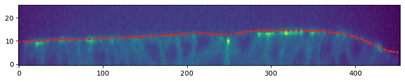
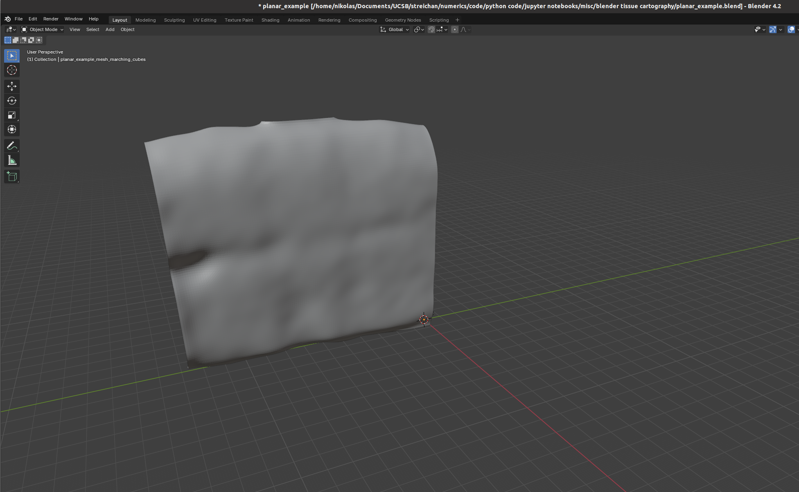
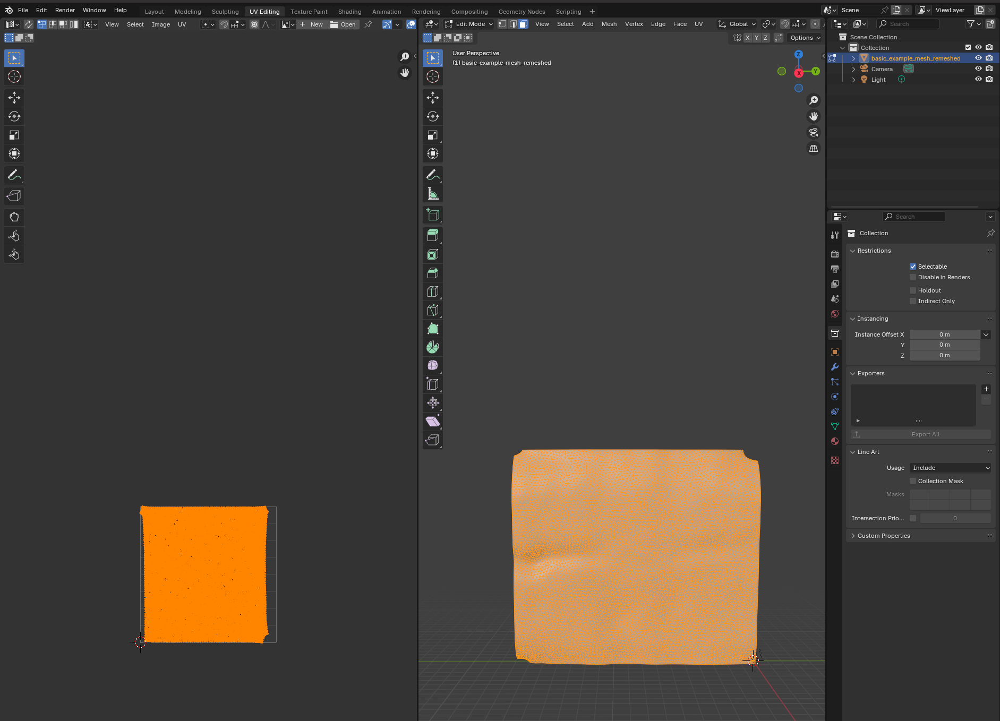
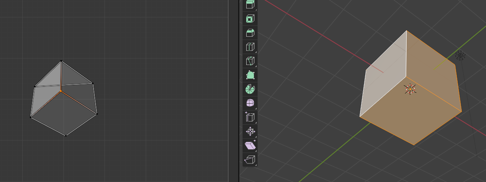
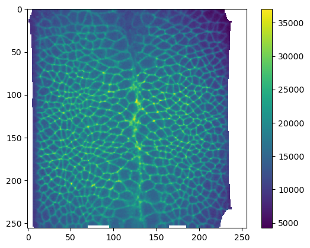
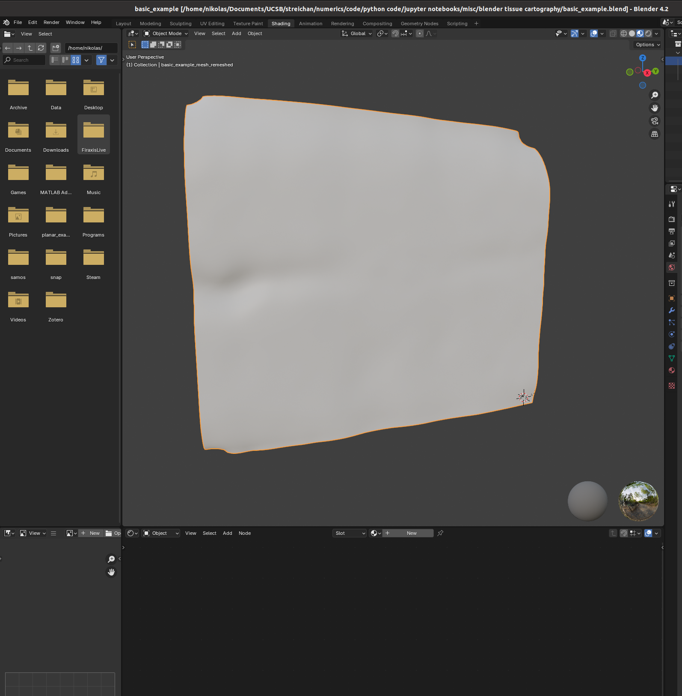

# these are the modules with the tissue cartography code
from blender_tissue_cartography import io as tcio # for file reading and saving
from blender_tissue_cartography import mesh as tcmesh # for mesh handling
from blender_tissue_cartography import remesh as tcremesh # for mesh creationg
from blender_tissue_cartography import interpolation as tcinterp # for cartographic projection4. blender_tissue_cartography Python library
In this notebook, we go through a basic example of tissue cartography using the Python library version of blender_tissue_cartogrpahy - extracting the mildly curved surface of an epithelium from a confocal \(z\)-stack.
This example data is taken from Lye et al. 2024, available at https://www.ebi.ac.uk/biostudies/studies/S-BIAD1271.
We start by loading the required Python modules. We don’t need to manually copy the functions we need into each jupyter notebook.
import igl
import numpy as np
from skimage import transform
import os
import matplotlib.pyplot as plt# Only run this if you have installed pymeshlab
import pymeshlab
from blender_tissue_cartography import remesh_pymeshlab as tcremesh_pymeshlabWarning:
Unable to load the following plugins:
libio_e57.so: libio_e57.so does not seem to be a Qt Plugin.
Cannot load library /home/nikolas/Programs/miniconda3/envs/blender-tissue-cartography/lib/python3.11/site-packages/pymeshlab/lib/plugins/libio_e57.so: (/lib/x86_64-linux-gnu/libp11-kit.so.0: undefined symbol: ffi_type_pointer, version LIBFFI_BASE_7.0)
Important conventions
- Image axis 0 is always the channel. All other axes are not permuted
- Mesh coordinates are always saved in microns.
- The UV map (the map of our surface mesh to a cartographic plane) always maps into the unit square, \(u\in[0,1], \; v\in[0,1]\). All of our projections will be square images (with transparent regions for parts of the UV square not covered by the unwrapped mesh)
Load and subsample data for segmentation
Data description myosin + membrane ventral view of Drosophila embryo during germband extension, from Lye et al. 2024.
We begin by creating a directory for our project where we’ll save all related files (and normally, the jupyter notebook used to generate them!).
Let’s load the dataset. We then enter the relevant metadata - the filename, resolution in microns, and how much we want to subsample for segmentation purposes.
# start by entering the filename
metadata_dict = {'filename': 'basics_example/basics_example'}image = tcio.adjust_axis_order(tcio.imread(f"{metadata_dict['filename']}.tif"))
print("image shape:", image.shape)image shape: (2, 26, 454, 511)Resolution info and subsampling
From the image shape, we can see that the spatial axes are in \(z-x-y\) order. We use this information to correctly enter the resolution in microns/pixel for each axis. You can typically get this info from the .tif metadata. We then subsample the image for rapid segmentation. It is usually a good idea to make the subsampled image approximately isotropic.
metadata_dict['resolution_in_microns'] = (1, 0.36, 0.36)
metadata_dict['subsampling_factors'] = (1, 1/3, 1/3)We now downscale the image. For very large volumetric images, you should use the option use_block_averaging_if_possible=True and choose subsampling factors which (a) are inverse integers like 1/2, 1/3, and (b) if possible, divide the number of pixels along each axis (so for instance 1/2 would be good for an axis with 1000 pixels, but not ideal for 1001 pixels).
subsampled_image = tcio.subsample_image(image, metadata_dict['subsampling_factors'],
use_block_averaging_if_possible=False)
print("subsampled image shape:", subsampled_image.shape)subsampled image shape: (2, 26, 151, 170)Create 3d segmentation
Now create a 3d segmentation, in this case using ilatik. We use ilastik binary pixel classification. We could post-process the ilastik output here, for example using morphsnakes. We then load the segmentation back into the jupyter notebook.
Attention: when importing the .h5 into ilastik, make sure the dimension order is correct! In this case, CZYX for both export and import.
# we now save the subsampled image a .h5 file for input into ilastik for segmentation
tcio.write_h5(f"{metadata_dict['filename']}_subsampled.h5", subsampled_image)# after creating an ilastik project, training the model, and exporting the probabilities, we load the segmentation
segmentation = tcio.read_h5(f"{metadata_dict['filename']}_subsampled-image_Probabilities.h5")
segmentation = segmentation[0] # select the first channel of the segmentation - it's the probablity a pixel
# is part of the sample
print("segmentation shape:", segmentation.shape)segmentation shape: (26, 151, 170)# look at the segmentation in a cross section
plt.imshow(segmentation[:,:,50], vmin=0, vmax=1)
Meshing
We convert the segmentation into a triangular mesh using the marching cubes method and save the mesh. We save all meshes as wavefront .obj files (see wikipedia). In Python, we represent missing entries (such as a vertex that doesn’t have a normal by np.nan.
Important convention For sanity’s sake, we will always store all mesh coordinates in microns. This means rescaling appropriately after calculating the mesh from the 3d segmentation.
# now we create a 3d mesh of using the marching cubes method
vertices, faces = tcremesh.marching_cubes(segmentation, isovalue=0.5, sigma_smoothing=3)
# EXTREMELY IMPORTANT - we now rescale the vertex coordinates so that they are in microns.
vertices_in_microns = vertices * (np.array(metadata_dict['resolution_in_microns'])
/np.array(metadata_dict['subsampling_factors']))
mesh = tcmesh.ObjMesh(vertices_in_microns, faces)
mesh.name = "basics_example_mesh_marching_cubes"
mesh.write_obj(f"{metadata_dict['filename']}_mesh_marching_cubes.obj")Optional - mesh compression using igl
The mesh returned by the marching cubes method is normally much denser than necessary. You can automatically reduce its size here in Python, or later in blender.
_, vertices_remeshed, faces_remeshed, _, _ = igl.qslim(vertices_in_microns, faces, max_m=int(faces.shape[0]/2))
mesh = tcmesh.ObjMesh(vertices_remeshed, faces_remeshed)
mesh.name = "basics_example_mesh_marching_cubes_compressed"
mesh.write_obj(f"{metadata_dict['filename']}_mesh_marching_cubes_compressed.obj")Optional - improve mesh quality using MeshLab
We can remesh the output of the marching cubes algorithm to obtain an improved mesh, i.e. with more uniform triangle shapes. In this example, we first remesh to make the mesh more uniform. You can also try this out in the MeshLab GUI and export your workflow as a Python script. Be careful not to move the mesh or it will mess up the correspondence with the pixel coordinates!
mesh_remeshed = tcremesh_pymeshlab.remesh_pymeshlab(mesh)
mesh_remeshed.write_obj(f"{metadata_dict['filename']}_mesh_remeshed.obj")To check all went well, let’s overlay the mesh coordinates over a cross section of the image. To do so, we use a simple helper function.
image = tcio.adjust_axis_order(tcio.imread(f"{metadata_dict['filename']}.tif"))
mesh = tcmesh.ObjMesh.read_obj(f"{metadata_dict['filename']}_mesh_remeshed.obj")slice_image, slice_vertices = tcinterp.get_cross_section_vertices_normals(2, 100,
image, mesh, metadata_dict["resolution_in_microns"],
get_normals=False)# we need to specify the "aspect" because our image resolution is not isotropic
# and use some extra arguments (like `origin="lower"`) to get our plot to be correctly
# oriented
fig = plt.figure(figsize=(10,10))
plt.scatter(*slice_vertices[:,::-1].T, s=5, c="tab:red")
plt.imshow(slice_image[0].T, origin="lower",
aspect=(metadata_dict["resolution_in_microns"][0]
/metadata_dict["resolution_in_microns"][2]))
Automated UV mapping by axis projection
We are now ready to compute a UV map for our mesh. You can do this interactively in Blender (see below) and export the results back to python, or do this in an automated fashion in Python.
blender_tissue_cartography provides a small set of tools for automated UV mapping (see also tutorial 9). The dataset we are looking at here is an example of a simple, but very frequent case: a surface that can be represented by a “height function” without any “overhang”. This means we can create a UV map by simply projecting the vertex coordinates along one axis. The result is an improved version of a basic “z-projection” you could do in Fiji.
This automated UV mapping can for example be directly applied to all frames of a movie (see also tutorial 10).
# first select the two axes along which you want to project (here, x and y)
axis1 = np.array([0,1,0])
axis2 = np.array([0,0,1])
# the UV coordinates need to lie between 0 and 1, so we need to scale the projected 3D coordinates.
# we can compute this scale from the shape of the volumetric image.
scale = tcmesh.compute_project_from_axis_scale(image_shape=(26, 454, 511), resolution=metadata_dict["resolution_in_microns"],
axis1=axis1, axis2=axis2)
mesh_axis_projected = tcmesh.project_from_axis(mesh, axis1=axis1, axis2=axis2, scale=scale, translate=0)
mesh_axis_projected.set_normals()
mesh_axis_projected.write_obj(f"{metadata_dict['filename']}_mesh_axis_projected.obj")UV-mapping in blender
We now switch to blender and create a new empty project, which we will call f"{metadata_dict['filename']}.blend". We import the mesh just generated (File->Import).

I recommend using the “object” tab (orange square on the right toolbar) to lock mesh position and rotation so we don’t accidentally move it.
Let’s try to move forward and get a UV map of the mesh. To do so, we go to the “UV Editing” tab on the top toolbar, and press “3” then “A” to select all faces (“1” selects vertices, “2” edges, and “3” faces). Click “UV->unwrap” on the top panel.  For more complicated meshes (e.g. a sphere), we will need to use extra steps, e.g. define seams.
Self-intersections
Especially for complicated geometries, it is easy to accidentally create UV maps that self-intersect: some triangles will overlap with others. This can either happen if your UV map has multiple patches (see next tutorial), or if some triangles are flipped. For example, if you use the “project from view on the example UV cube:

Self-intersections are bad for cartography because they mean that the map from the plane to 3D is no longer well-defined where the self-intersection occurs. The algorithms here can handle self-intersections, but will give you a warning.
Blender export
We then click on “File->Export” and save as .obj with UV and normals:

A few things are important: - Always include UV and normals. Otherwise, cartographic projection will fail! - Only export selected items! With a more complicated blender project, you might end up exporting multiple meshes. This will trip up the cartographic projection algorithm. - Save as a triangulated mesh! The algorithms in this software package require mesh faces to be triangles. This option will subdivide any quads/polygons your mesh may have.
The new mesh file basics_example_mesh_uv.obj now contains vertex normals and UV coordinates.
Cartographic projection
We now read in the new .obj file to interpolate the image data onto the 3d mesh. This .obj mesh contains both the information about where the surface is located in 3d, and how it will be mapped into the plane (into the UV square). The UV grid always covers the unit square \([0,1]^2\).
We additionally specify a series of offsets in the surface normal direction to make a multilayer projection. We also get the 3d coordinates and the vertex normals interpolated onto the UV grid from this step.
mesh_uv = tcmesh.ObjMesh.read_obj(f"{metadata_dict['filename']}_mesh_uv.obj")Warning: readOBJ() ignored non-comment line 4:
o basic_example_mesh_remeshednormal_offsets = np.linspace(-2, 2, 5) # in microns
# let's add the normal offset we want to our metadata - it will be important for analysis!
metadata_dict["normal_offsets"] = normal_offsets# compute the cartographic projections
projected_data, projected_coordinates, projected_normals = tcinterp.create_cartographic_projections(
image=f"{metadata_dict['filename']}.tif",
mesh=f"{metadata_dict['filename']}_mesh_uv.obj", # you can either specify a path to an .obj file
#mesh=mesh_axis_projected, # or a ObjMesh object
resolution=metadata_dict["resolution_in_microns"],
normal_offsets=normal_offsets,
uv_grid_steps=256)
print("Image shape:", projected_data.shape) # 0th axis is the channel, 1st axis the layerWarning: readOBJ() ignored non-comment line 4:
o basic_example_mesh_remeshedImage shape: (2, 5, 256, 256)# show projected image - here let's look at channel 1 (membrane marker)
plt.imshow(projected_data[1, 0])
plt.colorbar()
# let's check that there are no self-intersections
mesh = tcmesh.ObjMesh.read_obj(f"{metadata_dict['filename']}_mesh_uv.obj")
len(igl.flipped_triangles(mesh.texture_vertices, mesh.texture_tris)) # looks goodWarning: readOBJ() ignored non-comment line 4:
o basic_example_mesh_remeshed0Saving the results
We can now save the cartographic projections both as .tif stack for quantitative analysis and as .png’s for visualization as mesh texture in blender. We will also save the metadata to a .json file
# save metadatat o a human and computer readable file
tcio.save_dict_to_json(f"{metadata_dict['filename']}_metadata.json", metadata_dict)# save projected data as .tif's for quantitative analysis
tcio.save_for_imageJ(f"{metadata_dict['filename']}_projected.tif", projected_data, z_axis=1)
tcio.save_for_imageJ(f"{metadata_dict['filename']}_3d_coordinates.tif", projected_coordinates)
tcio.save_for_imageJ(f"{metadata_dict['filename']}_normals.tif", projected_normals)texture_path = f"{metadata_dict['filename']}_textures"
tcio.save_stack_for_blender(projected_data, texture_path, normalization=(0.01, 0.99))# let's make a max projection of each channel and save them also
max_projected_ch_0, max_projected_ch_1 = projected_data.max(axis=1)
tcio.imsave(f'{texture_path}/max_channel_0.png', tcio.normalize_quantiles_for_png(max_projected_ch_0))
tcio.imsave(f'{texture_path}/max_channel_1.png', tcio.normalize_quantiles_for_png(max_projected_ch_1))Visualization in blender
You can set up textures in the “shading” tab:

I find it helpful to remove the distracting “world” background, which you can do by either enabling “scene world” or setting “world opacity” to 0 in the viewport shading settings (arrow above “options” in the top right corner)
Go to the bottom panel, add a new material (center top of bottom panel), and press “shift+A” to add a new shader element (the search bar is very helpful). Here is an example configuration mixing two channels as red and green:

And there we go! Many further options exist to make more sophisticated renderings.
Next steps
In the next tutorial, we will see how to UV map a more complicated shape (not topologically a disk) via seams.